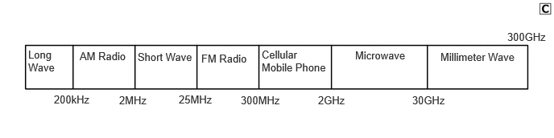
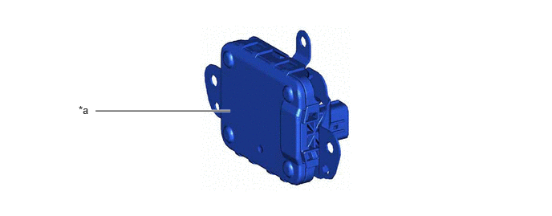
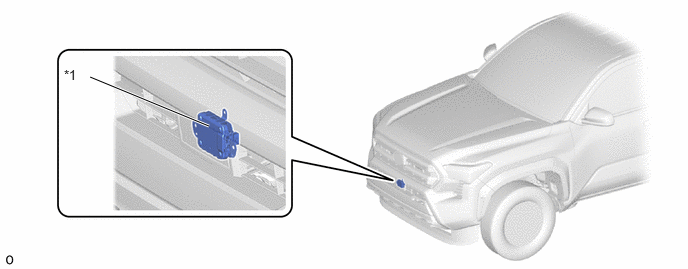

| Last Modified: 10-07-2025 | 6.11:8.1.0 | Doc ID: NM100000002GLTI |
| Model Year Start: 2024 | Model: Tacoma | Prod Date Range: [12/2023 - ] |
| Title: ADVANCED DRIVER ASSISTANCE SYSTEM: FRONT RADAR SENSOR: MILLIMETER WAVE RADAR SENSOR; 2024 - 2026 MY Tacoma Tacoma HV [12/2023 - ] | ||
MILLIMETER WAVE RADAR SENSOR
CONSTRUCTION
(a) Millimeter wave radar uses an extremely high frequency band between 30 GHz to 300 GHz, with an extremely short wavelength between 1 to 10 mm (0.04 to 0.40in.) in a vacuum. The millimeter wave radar sensor assembly uses frequencies in the 76.5 GHz band.
(b) The receiving antennas receive the millimeter wave radar waves that have been reflected. The signal processing circuit detects the distance, the relative speed and the direction of the object by generating millimeter wave radar waves and calculating the signals received by the reception antennas. Then, it transmits this information to the forward recognition camera.
|
*a |
Sensor Portion |
- |
- |
HINT:
- The millimeter wave radar sensor assembly
complies with the radio standards act. A label is
stamped on the millimeter wave radar sensor assembly
as a certification of conformity.
Disassembly/modification of the millimeter wave radar
sensor assembly may result in penalty. 
*1
Millimeter Wave Radar Sensor Assembly
-
-
- Clean the front of a millimeter wave radar sensor assembly or the front or back of a radar sensor cover if it is dirty or covered with water droplets, snow, etc.
- Clean the millimeter wave radar sensor assembly and radar sensor cover with a soft cloth so as to not mark or damage them.
- Do not attach accessories, stickers (including transparent stickers), aluminum tape, etc. to a millimeter wave radar sensor assembly or radar sensor cover and their surrounding area.
- Do not subject a millimeter wave radar sensor assembly or its surrounding area to impact.
- Do not modify or paint the millimeter wave radar sensor assembly or radar sensor cover.
(c) In the following situations, recalibration of the millimeter wave radar sensor assembly will be necessary.
- When a millimeter wave radar sensor assembly is removed and installed, or replaced.
- When the front bumper or the front grille has been replaced.
- When the front grille has been removed and installed.